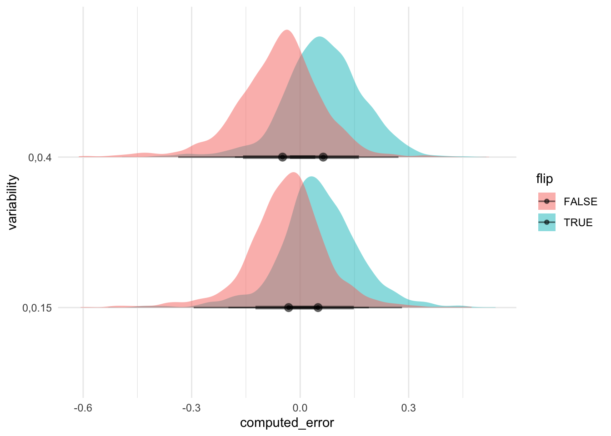
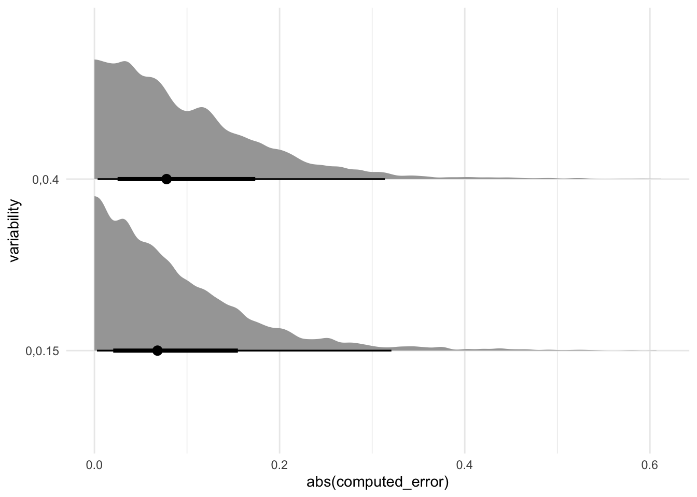
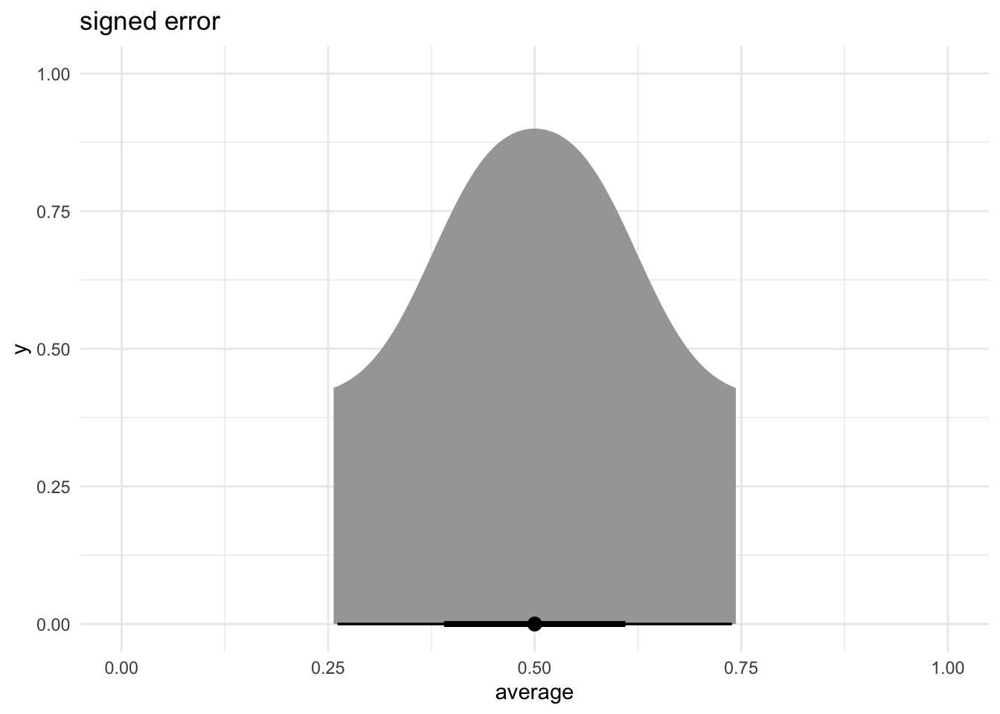
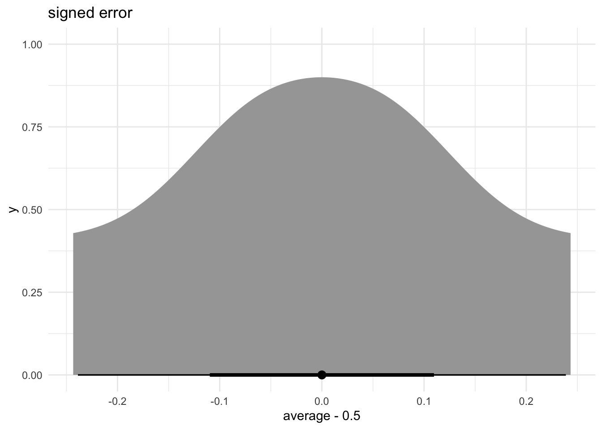
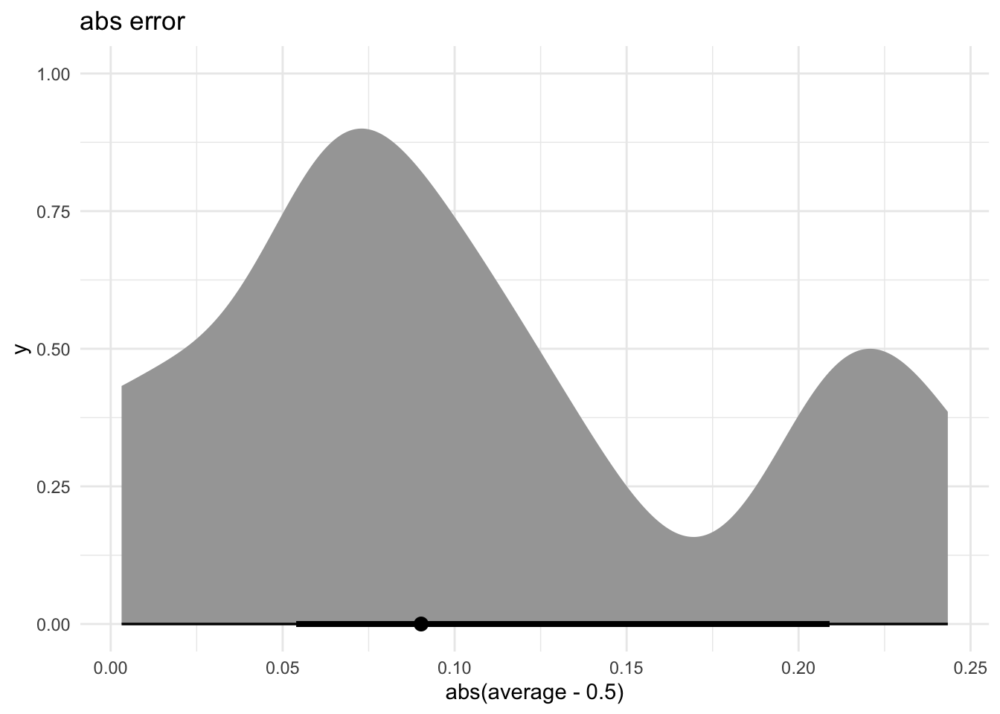
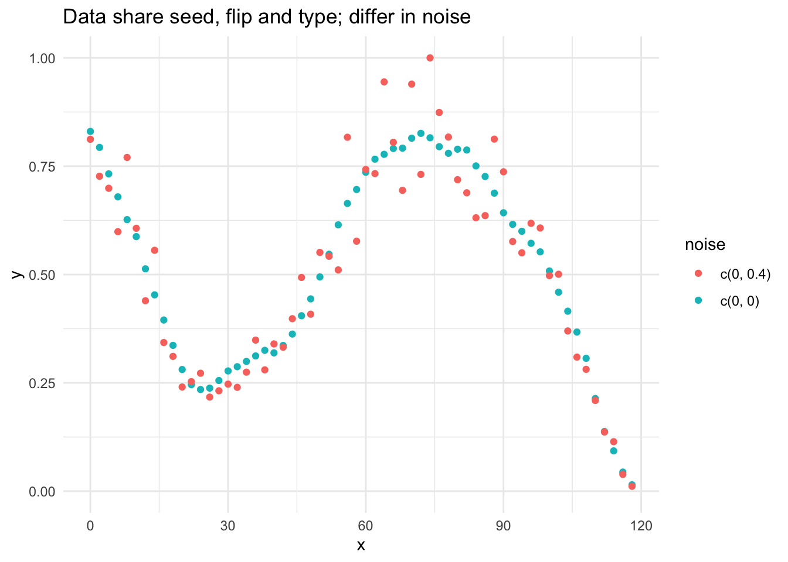
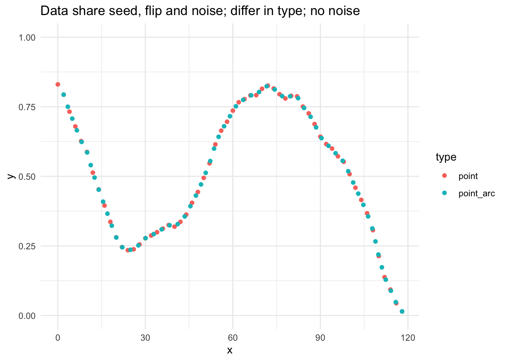
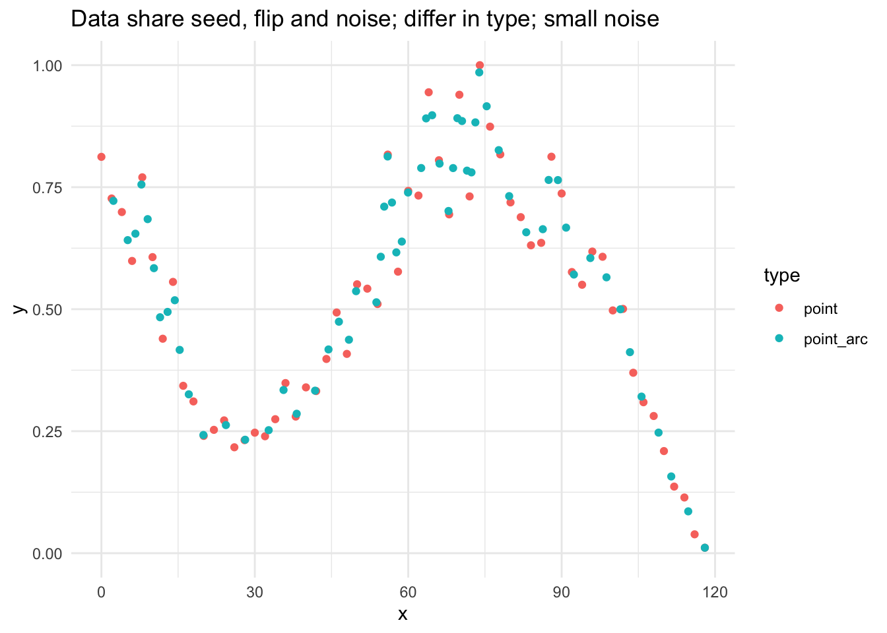
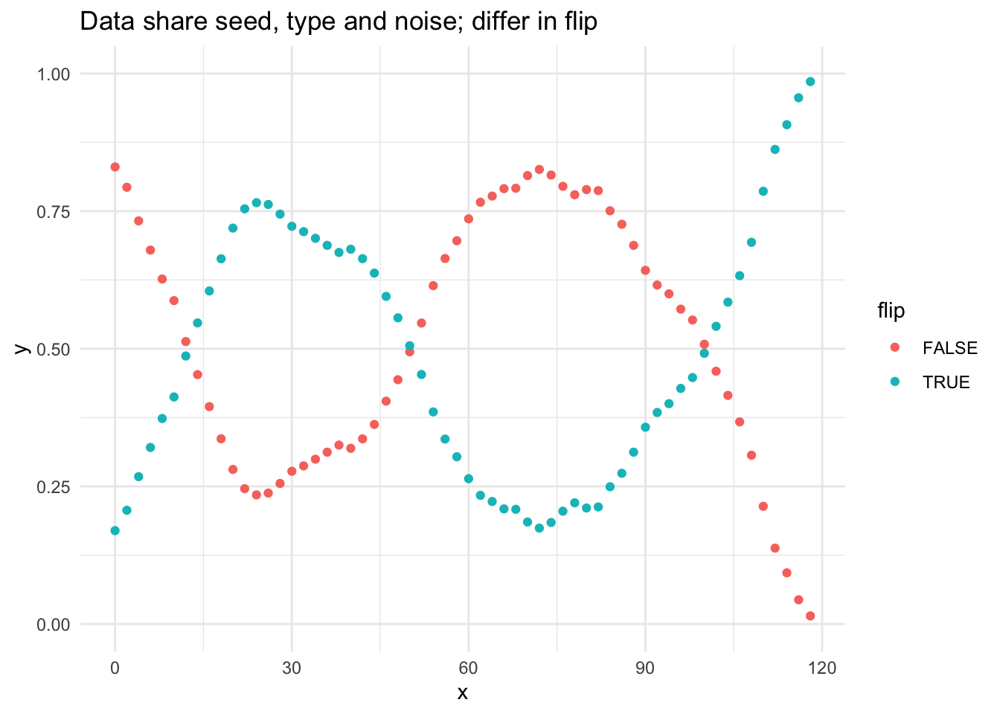
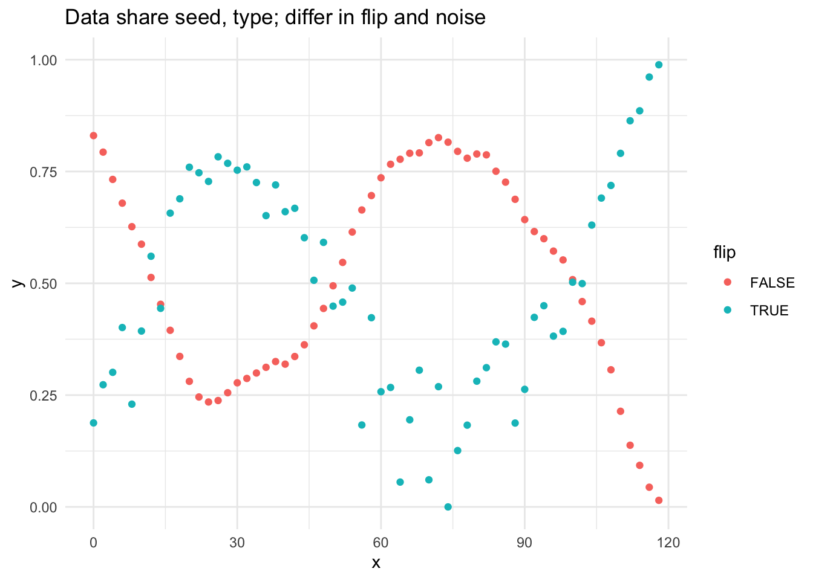

library(ggplot2)
library(tidyverse)
library(tidybayes)
library(here)
library(jsonlite)Moritz exp1 and exp 2
Exp 1
Read in data for experiment 1:
- 142 participants
- each participant did 48 trials
computed_erroris calculated asaverage - reportedaverage
df <- read.csv(here("data", "moritz", "exp", "exp1.csv")) %>% as.data.frame(.)
p_df <- df %>% select(assignmentid, trial, stimuliindex, variability, flip, average, error, errorFrom50, reportedaverage, computed_error)
p_df %>% group_by(trial) %>% count(.)p_df %>% ggplot(aes(x = computed_error, y = variability, fill = flip)) +
stat_halfeye(alpha = 0.5) +
theme_minimal()
Note that flip = TRUE entails that more variability in lower values of y, while flip = FALSE entails higher variability in higher values of y.
I guess it does look kind of Gaussian … ?
What about absolute error ?
p_df %>% ggplot(aes(x = abs(computed_error), y = variability)) +
stat_halfeye() +
theme_minimal()
What about the distribution of the true average values …?
p_df %>% group_by(stimuliindex, average) %>% summarize(.) %>%
ggplot(aes(x = average)) +
stat_halfeye() +
coord_cartesian(xlim=c(0, 1)) +
theme_minimal() +
labs(title = "signed error")
p_df %>% group_by(stimuliindex, average) %>% summarize(.)If we answer 0.5 all the time, then the distribution of error is going to look like:
p_df %>% group_by(stimuliindex, average) %>% summarize(.) %>%
ggplot(aes(x = average - 0.5)) +
stat_halfeye() +
# coord_cartesian(xlim=c(0, 1)) +
theme_minimal() +
labs(title = "signed error")
p_df %>% group_by(stimuliindex, average) %>% summarize(.) %>%
ggplot(aes(x = abs(average - 0.5))) +
stat_halfeye() +
# coord_cartesian(xlim=c(0, 1)) +
theme_minimal() +
labs(title = "abs error")
Read in data for experiment 2
Experiment design: used a 2 (variability: 0 and .4) noise x 2 (variability: upper vs. lower) flip x 3 (mark type: line graph, Cartesian spaced points, arc spaced points) type mix-design. Using 12 seeds.
The takeaway is that for datasets that share the same ssed, same noise, same type — the data is exactly the same except it’s flipped. same seed, same flip, same type, different noise –> ??? What does this entail …?
I just want to understand — how many of the underlying “line is the same”, but they just differ in the spacing …??
json_data <- jsonlite::fromJSON(here("data", "moritz", "stimuli", "exp2-stimuli.json" )) %>% as_tibble(.)
# json_data
df <- json_data %>% select(index, seed, noise, flip, type, data) %>%
mutate(noise = as.character(noise))
line_df <- json_data %>% select(index, seed, noise, flip, type, lineData) %>%
mutate(noise = as.character(noise))
highNoise_df <- json_data %>% select(index, seed, noise, flip, type, highNoiseData) %>%
mutate(noise = as.character(noise))
# let's check what the mean value for each group is ... df %>% filter(type != 'line') %>%
unnest(cols=c(data)) %>%
group_by(index, seed, noise, flip, type) %>%
summarise(x_nrow = mean(x), mean_y = mean(y))line_df %>% filter(type != 'line') %>%
unnest(lineData) %>%
group_by(index, seed, noise, flip, type) %>%
summarise(x_nrow = mean(x), mean_y = mean(y))highNoise_df %>% filter(type != 'line') %>%
unnest(highNoiseData) %>%
group_by(index, seed, noise, flip, type) %>%
summarise(x_nrow = n(), mean_y = mean(y))df %>% filter(type != "line") %>%
filter(index %in% c(4, 6)) %>%
unnest(data) %>%
ggplot(aes(x = x, y = y, color=noise)) +
geom_point() +
theme_minimal() +
labs(title = "Data share seed, flip and type; differ in noise") +
coord_cartesian(ylim = c(0, 1))
df %>% filter(type != "line") %>%
filter(index %in% c(4, 8)) %>%
unnest(data) %>%
ggplot(aes(x = x, y = y, color=type)) +
geom_point() +
coord_cartesian(ylim = c(0, 1)) +
theme_minimal() +
labs(title = "Data share seed, flip and noise; differ in type; no noise")
df %>% filter(type != "line") %>%
filter(index %in% c(6, 10)) %>%
unnest(data) %>%
ggplot(aes(x = x, y = y, color=type)) +
geom_point() +
coord_cartesian(ylim = c(0, 1)) +
theme_minimal() +
labs(title = "Data share seed, flip and noise; differ in type; small noise")

df %>% filter(type != "line") %>%
filter(index %in% c(4, 5)) %>%
unnest(data) %>%
ggplot(aes(x = x, y = y, color=flip)) +
geom_point() +
coord_cartesian(ylim = c(0, 1)) +
theme_minimal() +
labs(title = "Data share seed, type and noise; differ in flip")
To fill this up, we also consider 4 and 7:
df %>% filter(type != "line") %>%
filter(index %in% c(4, 7)) %>%
unnest(data) %>%
ggplot(aes(x = x, y = y, color=flip)) +
geom_point() +
theme_minimal() +
coord_cartesian(ylim = c(0, 1)) +
labs(title = "Data share seed, type; differ in flip and noise")
Let us check the mean for the first group that share the same seed:
df %>% filter(type != "line") %>%
filter(seed == 1) %>%
unnest(cols = c(data)) %>%
group_by(index, seed, noise, flip, type) %>%
summarise(x_nrow = n(), mean_y = mean(y))# df %>% unnest(cols=c(data)) %>%
# group_by(index, seed, noise, flip, type) %>%
# summarise(mean_x = mean(x), mean_y = mean(y)) %>%
# ungroup(.) %>%
# select(seed, noise, flip, type, mean_y) %>%
# filter(flip == FALSE) %>%
# ggplot(aes(x = seed, y = mean_y, color = type)) +
# geom_point() +
# theme_minimal()